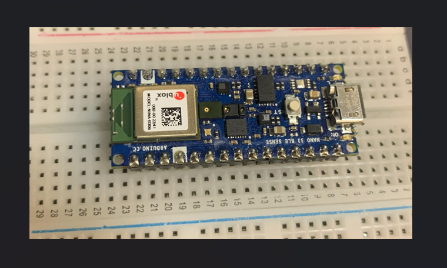
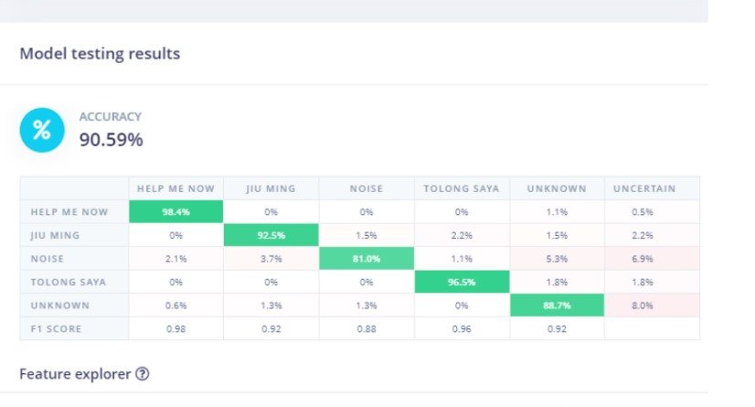

.jpg)
03 — Inside the Build
Hardware & software.
TinyML is the practice of running machine learning models on microcontrollers. Devices with kilobytes of RAM, not gigabytes. Design specically to run on low-powered energy consumption.
Feature Prototype
Distress Recognition System
A low-powered device using the Arduino Nano BLE 33 that recognises a distress phrase and activates a colour-coded LED alert system in real time. Unlike conventional emergency systems requiring manual activation, this project utilizes embedded TinyML speech recognition to autonomously detect verbal distress signals in real time while maintaining low power consumption and offline functionality
- ◈ Noise-robust detection - model trained on apartment soundscapes including TV, traffic, and background conversation
- ◈ Self-collected multilingual dataset - audio samples recorded and labelled from scratch
- ◈ MFCC feature extraction via Edge Impulse, deployed as a C++ inference library
- ◈ Operates fully on-device without reliance on cloud computation
Arduino Nano BLE 33
Edge Impulse
TinyML
C++
MFCC
DSP

